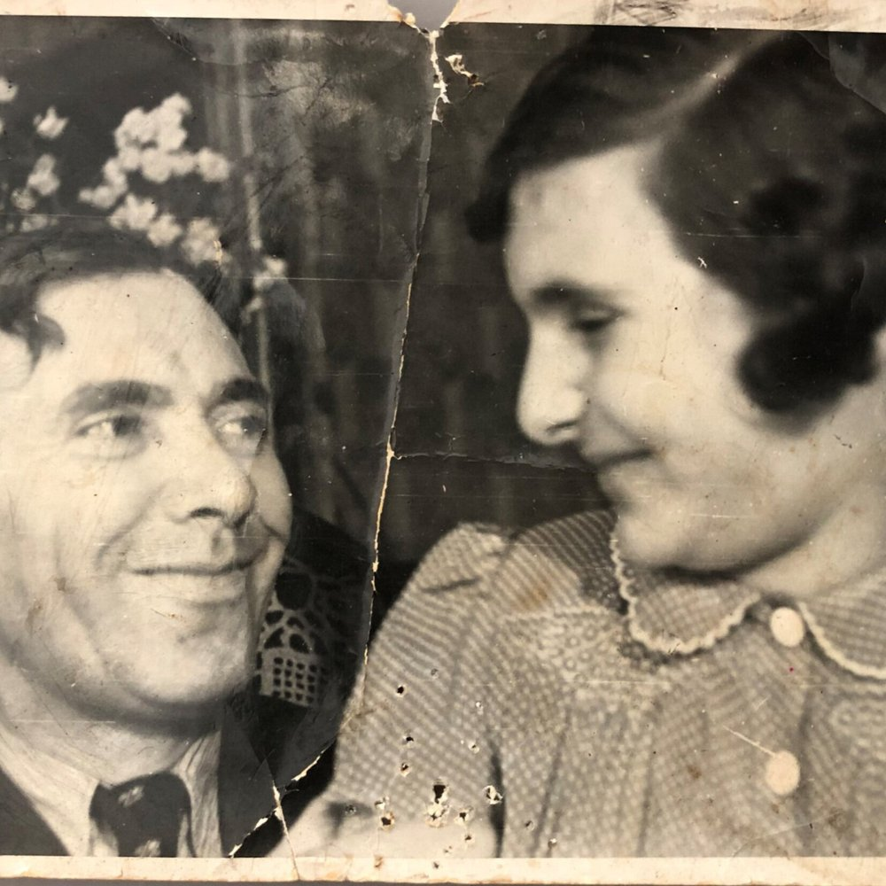

Portrait d’archive
Laure "Nani" Dreifus
Laure “Nani” DREIFUS
Nom : DREIFUS
Prénom(s) : Laure Lore “Nani”
Date naissance : 20/05/1931
Âge (ans) : 12
Lieu naissance : Deux-Ponts (Zweibrücken)
Pays ou département : Allemagne
Lieu rassemblement : Lyon
Dernière adresse : 12 rue des Tables Claudiennes et 26, avenue du Château
Ville : Lyon
Code postal : 69003
N° Convoi : 66
Date déportation : 20/01/1944
Informations diverses : Fille de Robert (08/02/1900, Pirmasens, Allemagne), dentiste et de Hilde Margarete (née Jean le 26/05/1907, Deux-Ponts ou Zweibrücken, Allemagne), tailleur, qui se sont mariés le 20 décembre 1928 sans doute à Deux-Ponts (à 2 km de la frontière française près de la ville de Bitche, Moselle). Lore dite Nani nait le 20/05/1931 à Deux-Ponts. Le 10-12/11/1938, son père Robert est arrêté et déporté à Dachau du 12/11/1938 au 30/01/1939 avec son frère Arthur et un groupe de Juif. Ils seront expulsés de l’autre côté de la frontière, en France (Source: Karola Streppel, Groupe de travail sur l'histoire des juifs de Pirmasens). Il rentre en France le 27/02/1939 par Forbach. Il est interné au camp de Chambaran (Isère) où il est employé (en temps que dentiste) comme d’autres allemands à des travaux militaires en tant que « prestataires ». Hilde et Lore entrent en France le 29/03/1939 (?) par Forbach avec comme motif leur départ en Uruguay. Elles réside à Paris 18ème , rue de Chartre, Hôtel du Commence jusqu’au 28/04/1939, puis sont venue à Lyon où elle habitent, 12 rue des Tables Claudiennes (Source: Préfecture du Rhône, 02/01/1940). Elles obtiennent un permis de séjour expirant le 31/07/1940. Thekla Stern (née Dreifus) est la soeur de Robert Dreifus et Laure est la cousine germaine de Peter Stern, déporté par le convoi 66.
Laure est élève à l’École des Tables Claudiennes entrée 8 mai 1938 (?) (école primaire de garçon, 18, rue Neyret (aujourd’hui Maison De La Métropole Pour Les Solidarités), école de filles du 2, rue des Tables Claudiennes). Registre : Habitait 12 rue des Tables Claudiennes, père chirurgien dentiste; date entrée à l'école 8 mai...
Le 18/02/1939, son père soumet une demande de quitter la France, sur laquelle l’Uruguay (ou Brésil ?) est répertorié comme destination d'émigration (Source: Karola Streppel, Groupe de travail sur l'histoire des juifs de Pirmasens). Le 25/10/1940, Hilde et Robert (qui les a rejoint à Lyon) font une demande de prolongation de leur permis de séjour en France auprès de la Préfecture du Rhône. La famille est cependant arrêtée et déportée le 20/01/1944 par le convoi 66 du 20/01/1944.
Une plaque en mémoire de Laure et de Peter a été dévoilée le 08/02/2022 à l’Ecole des Tables Claudiennes, en présence de leur cousine Evelyne Benkemoun et de leur petite-cousine Eloïse Girault-Benkemoun.
Lieu de déportation : Auschwitz
Lieu de départ : Drancy
Nombre total de déporté·e·s du convoi : 1155
Gazé·e·s à l'arrivée : 864 (74,8 %)
Survivant·e·s en 1945 : 72 (6,2 %)